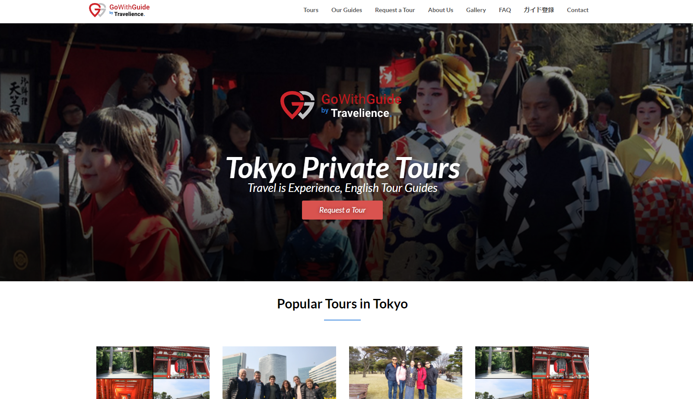
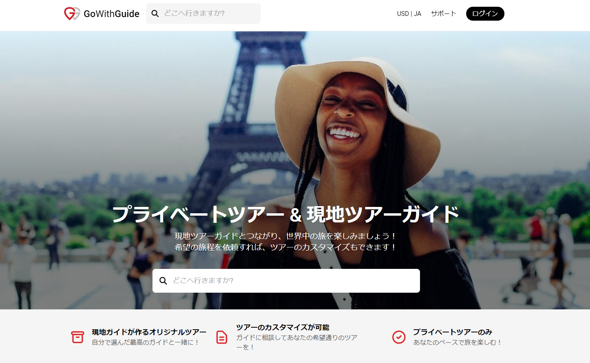

Travelience
Internship Report
For my internship I worked for an online travel agency company that specialized in creating itineraries and contracting out local guides in order to sell tours in popular locations around the world. I acted as a researcher and tour creator as well as doing other clerical tasks. My internship goal was to help Travelience create popular tour itineraries for famous cities around the world. In particular, they wanted me to research the location I was assigned by looking at other similar websites to theirs to determine the most popular spots.
I was then to create 6 tours for a location by category such as Full day tours, half day tours, street food tours, family tours, nightlife tours, and customizable tours. After this I would compile my research of various website tours and locations and create a few “idea” tours that would go through the most popular spots and would be priced according to similar tours. Lastly, I would write descriptions of each location in order to make the tour appealing. After this I would review these ideas with my supervisor and correct any mistakes or adjust the itinerary. Once a tour was finalized and approved, I would move on to collecting pictures for the tour’s page. After this I would search for local tour guides in that location I was researching, and I would compile a list of their business emails for future contact by another Travelience representative. This was my general work flow. In addition, since me and Chantal were the first people put on this task, we were working out the most efficient system for tour making as we worked through the internship thus making it easier for those that came after us. Overall I personally completed 18 tours between, Rome, Kyoto, Livorno, Pompeii, and Hawaii, some of which are now posted on the website. Below is a full report in Japanese and English of what I have learned from this valuable experience.
Click here to take a look at a tour I created